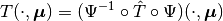
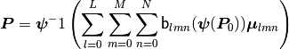
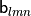

Freeform¶
Utilities for performing Free Form Deformation (FFD)
| Theoretical Insight: | |
|---|---|
Free Form Deformation is a technique for the efficient, smooth and accurate geometrical parametrization. It has been proposed the first time in Sederberg, Thomas W., and Scott R. Parry. “Free-form deformation of solid geometric models.” ACM SIGGRAPH computer graphics 20.4 (1986): 151-160. It consists in three different step:
FFD map (  In this way, every point inside the FFD box changes it position according to  where  are Bernstein polynomials. We improve the traditional version by allowing a rotation of the FFD lattice in order to give more flexibility to the tool. You can try to add more shapes to the lattice to allow more and more involved transformations. |
|
 ) is the composition of the three maps, that is
) is the composition of the three maps, that isFFD._transform_points |
This private static method transforms the points according to the affine transformation taken from affine_points_fit method. |
FFD.perform |
This method performs the deformation on the mesh points. |
-
class
FFD(ffd_parameters, original_mesh_points)[source] Bases:
objectClass that handles the Free Form Deformation on the mesh points.
Parameters: - ffd_parameters (FFDParameters) – parameters of the Free Form Deformation.
- original_mesh_points (numpy.ndarray) – coordinates of the original points of the mesh.
Variables: - parameters (FFDParameters) – parameters of the Free Form Deformation.
- original_mesh_points (numpy.ndarray) – coordinates of the original points of the mesh. The shape is n_points-by-3.
- modified_mesh_points (numpy.ndarray) – coordinates of the points of the deformed mesh. The shape is n_points-by-3.
Example: >>> import pygem.freeform as ffd >>> import pygem.params as ffdp >>> import numpy as np
>>> ffd_parameters = ffdp.FFDParameters() >>> ffd_parameters.read_parameters('tests/test_datasets/parameters_test_ffd_sphere.prm') >>> original_mesh_points = np.load('tests/test_datasets/meshpoints_sphere_orig.npy') >>> free_form = ffd.FFD(ffd_parameters, original_mesh_points) >>> free_form.perform() >>> new_mesh_points = free_form.modified_mesh_points
-
static
_transform_points(original_points, transformation)[source] This private static method transforms the points according to the affine transformation taken from affine_points_fit method.
Parameters: - original_points (numpy.ndarray) – coordinates of the original points.
- transformation (function) – affine transformation taken from affine_points_fit method.
Returns: modified_points: coordinates of the modified points.
Return type:
-
perform()[source] This method performs the deformation on the mesh points. After the execution it sets self.modified_mesh_points.